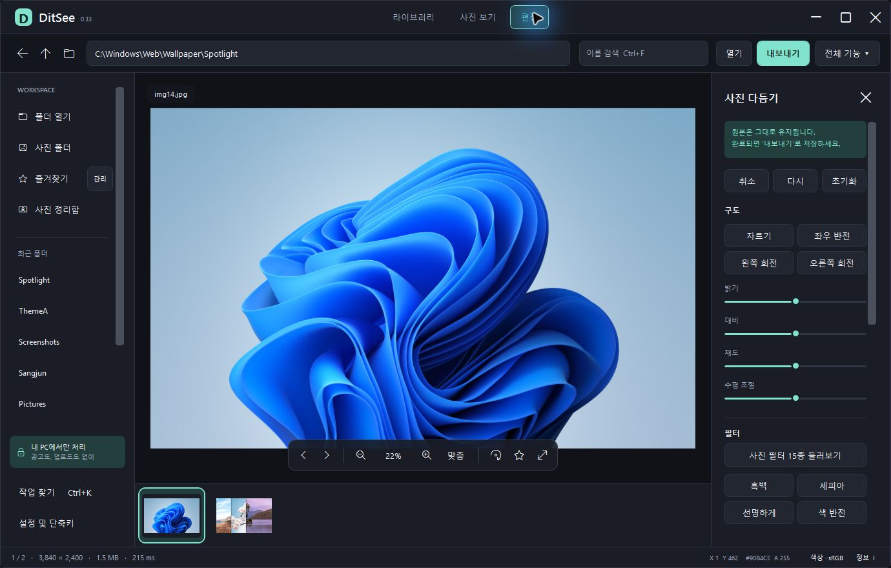

01 / 탐색폴더를 열면,
폴더를 열면,
작업이 시작됩니다.
썸네일·상세 목록·필름스트립으로 사진을 찾고,
자연 정렬과 즐겨찾기로 다시 돌아오세요.
썸네일 보기상세 목록파일 이름 검색즐겨찾기
Ctrl + O열기Ctrl + K작업 찾기
찾고, 비교하고, 다듬고, 저장하고.
흩어져 있던 사진 작업을 하나의 흐름으로.
Mj소프트의 Windows 이미지 워크스페이스, MjSee
단순히 열어 보는 것을 넘어, 다음 작업까지 이어지는 도구.
썸네일·상세 목록·필름스트립으로 사진을 찾고,
자연 정렬과 즐겨찾기로 다시 돌아오세요.
맞춤 보기와 100% 확대, 두 장·네 장 비교.
사진과 읽을거리에 맞춰 보기를 바꾸세요.
자르기·회전·색 보정에 글자·스티커·액자를 더하세요.
편집 패널에서 필요한 도구를 골라 사용합니다.
독립 변환창에 사진과 폴더를 모으고,
출력 설정을 확인한 다음 내보내세요.
사진 처리는 로컬에서. 로그인·광고·추적·자동 업로드 없이 사용합니다.
원본 덮어쓰기는 기본으로 하지 않으며, 내보내기 전에 저장 이름과 위치를 확인합니다.
실제 편집 패널을 가까이 살펴보세요.
자르기와 좌우 반전, 회전으로
사진의 방향과 구도를 정리하세요.
밝기·대비·채도·수평 조절을
한 패널에서 이어서 사용합니다.
완성한 결과는 내보내기로 저장합니다.
편집 중에는 취소와 다시 실행으로 돌아가세요.

처음 사용하는 날에도, 익숙한 순서 그대로.
파일을 끌어놓거나 Ctrl+O로 시작하세요. 썸네일과 검색으로 원하는 사진을 찾습니다.
사진을 크게 보고 편집 탭으로 이동하세요. 전체 기능 메뉴와 Ctrl+K로 도구를 찾을 수 있습니다.
저장 이름과 위치를 확인해 출력하세요. 여러 장은 F3 일괄 변환으로 모아 처리합니다.
일상적인 이미지부터 특수 형식까지, 지원 범위를 구분해 안내합니다.
JPEG · PNG · BMP 등 자주 쓰는 사진을 열고 편집합니다.
사진 보기 · 편집GIF · APNG · WebP · AVIF의 애니메이션 읽기를 제공합니다.
프레임·메모리 제한 있음다중 페이지 TIFF를 살펴보고 페이지를 선택해 작업합니다.
형식별 제약 확인ZIP · RAR · 7z와 추가 압축 형식의 사진을 직접 봅니다.
변형별 지원 범위 상이RAW/JPEG 짝 전환과 특수 형식 읽기를 제공합니다.
카메라·형식별 확인 필요ICC 색상 관리와 일부 PQ/HLG HDR 읽기를 개발 중입니다.
부분 구현 · 추가 검증모든 변형의 완전 호환을 의미하지 않습니다. 애니메이션은 프레임 수·메모리 한도가 있으며, 압축 사진은 암호화·분할·솔리드 방식에 따라 제한이 있습니다.
기능별 구현·검증 상태 ↗ 압축 사진 지원 범위 ↗
설치부터 사진 보관까지.
MjSee사진에 집중하는 가벼운 공간.Windows 10 2004(빌드 19041) 이상 또는 Windows 11의 x64 PC용입니다. 설치형에는 필요한 .NET 실행 구성요소가 포함되어 별도 런타임 설치가 필요하지 않습니다. ARM·32bit용 설치 파일은 아닙니다.
이 페이지에서는 런타임을 포함한 설치형을 제공합니다. 현재 사용자 계정에 설치되며 시작 메뉴와 앱 제거 항목을 만듭니다. 기존 폴더 실행형은 DLL과 하위 폴더를 함께 보관해야 하고 .NET 10 Desktop Runtime이 별도로 필요합니다.
사진 처리는 로컬에서 이루어지며 자동 업로드·로그인·추적 기능이 없습니다. 배경 제거 등 선택형 AI 기능은 처음 사용할 때 사용자 확인 후 모델을 별도로 다운로드합니다.
원본 덮어쓰기는 기본으로 하지 않습니다. 편집 결과는 내보내기에서 이름과 위치를 확인해 저장합니다. 일괄 변환도 출력 확인 후 시작합니다.
지원하는 압축 형식은 내부 사진을 직접 열 수 있습니다. 다만 형식별 암호화·분할·솔리드 압축과 제작 버전에 따라 제약이 있으며, 손상 복구나 모든 압축 변형의 호환을 보장하지 않습니다. 자세한 범위는 압축 사진 안내를 확인하세요.
현재 설치 파일은 코드 서명이 없는 0.33 개발 프리뷰입니다. Windows에서 확인되지 않은 게시자 또는 앱 보호 안내가 표시될 수 있습니다. 회사에서 서명된 앱만 허용한다면 담당자의 배포 기준을 확인하세요.
현재는 개발 프리뷰입니다. HDR 전체 처리·저장, 모든 RAW·특수 형식, 혼합 DPI·다중 모니터 등 추가 구현·검증이 남아 있습니다. 지원 형식 이름과 실제 파일의 호환 범위는 다를 수 있으며 기능별 상태 문서에서 구분해 안내합니다.
Windows x64 설치형 · 61.0 MiB · 별도 .NET 설치 불필요
MjSee 0.33 다운로드 ↓현재 사용자 계정에 설치합니다. 코드 서명이 없는 개발 프리뷰로,
Windows에서 게시자 확인 안내가 표시될 수 있습니다.
f10d2f58218eefe4640108061d37a338ce3577b060d84cad41788cda4f412980설치 파일은 기존 배포본을 제공하며, 설치 후 프로그램 내부와 제품 화면에는 이전 명칭이 표시될 수 있습니다.